Swipe for two minutes, and get a day-by-day plan with times, costs and a route.
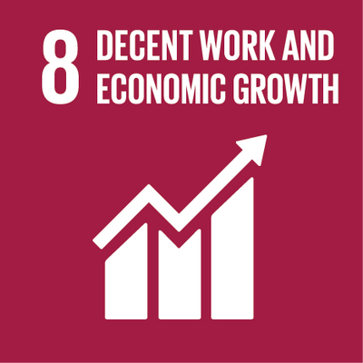
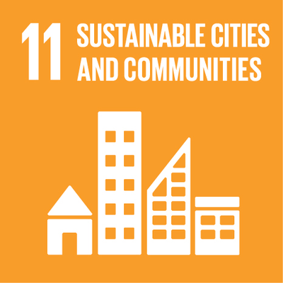
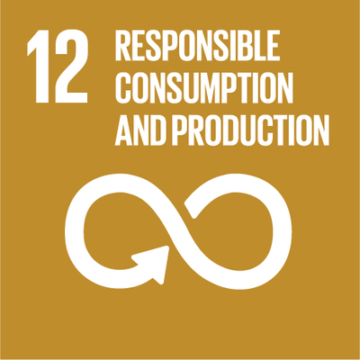
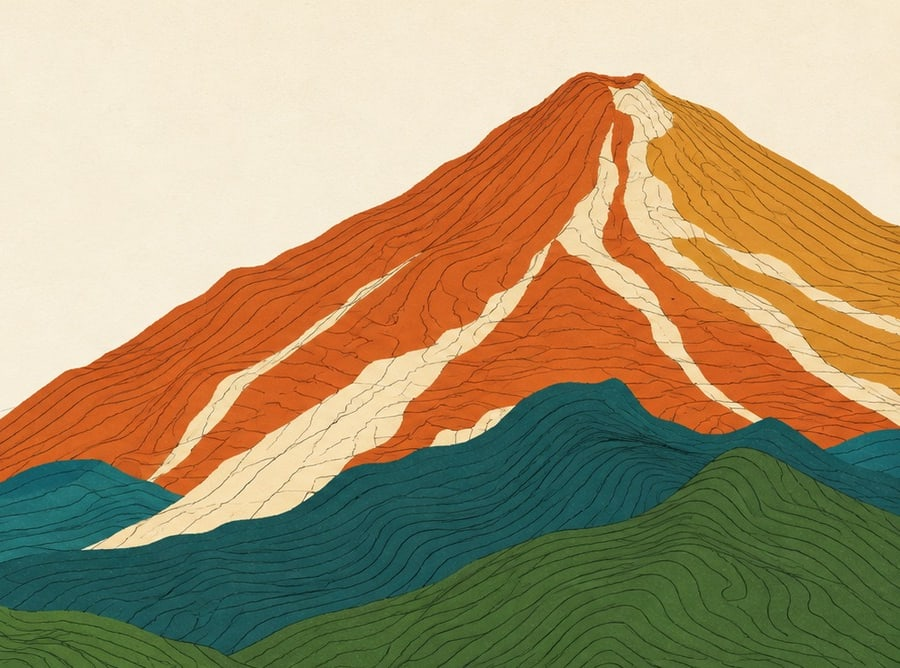
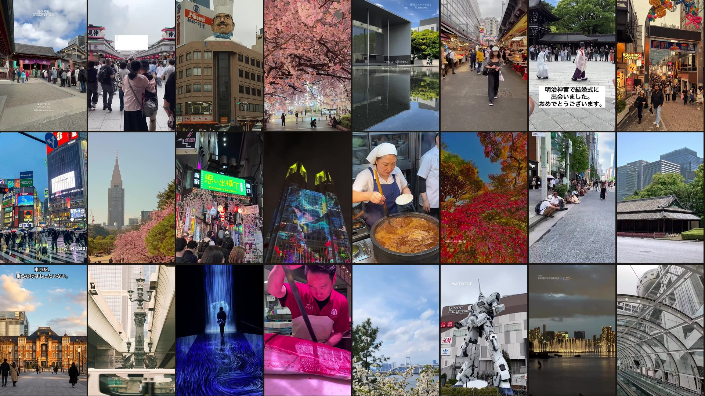
The problem
CodeNection’s brief calls it “scattered across five different apps and a group chat.” Four places everyone said yes to. Yet someone has to do all the planning.
One Tuesday in the group chat
“ok so Sensoji, Meiji Jingu and teamLab yes? and Ameyoko if we have time”
The Problem
We are not competing with travel planners. We are competing with the five free apps the group already has.
CodeNection’s brief, verbatim
“Planning a trip means dealing with flights, places to stay, budgets, activities, and whatever everyone in the group actually wants … it usually ends up scattered across five different apps and a group chat.”
The four causes underneath it, and who already serves each
Producing a plausible itinerary is slow
Chatbots commoditised it.
SolvedThe plan lives in five places at once
Wanderlog puts the map and the itinerary together.
SolvedGetting the group to agree on places
WhatsApp ships polls. Swipe apps produce a result.
SolvedTurning those votes into a day-by-day schedule with costs
The plan stays a screenshot: it cannot be reordered, costed or printed.
Served by nobodyWho It Is For
The organiser does four jobs nobody assigned her. The other three do none.
The organiser
Aisyah, 24
Junior job in KL, no car. Tokyo, four days and three nights, one day of annual leave tagged onto a weekend.
Every claim about her is marked assumed in docs/research. None of it comes from an interview.
When she opens it
The Tuesday nobody follows up the group chat, and midnight on the Thursday before the trip, re-checking opening hours by hand.
What she carries today
The other three
Farah
Different shift
Hana
Different job
Iman
Installs nothing
What they carry
Nothing, which is the problem. No stake means no reply, so the whole trip sits on one person until she gives up or overrules everyone.
Who we are not building for
The Concept
The group swipes. The organiser drags. Nobody types anything.
Ideation, 6 September
One Obsidian Canvas from 6 September, exported unedited.
What the map records
Six days
1 to 6 September, one branch a day
Three scans
Three passes over the market. None killed the swipe-to-calendar chain
Eleven dropped
Every dead end kept, with the day it stopped
Two live
The swipe and the book. Both shipped.
Every colour means something
Ideation, 6 September
Nine steps from a group chat to a printed trip, and the drawing they came from.
Nine steps, and eight of them are screens in the build
Before us
A group chat and a shared sheet
The landing
The one screen before anyone commits
Your trips
The trip, and the link that invites the group
Plan a new trip
Dates, who is coming, what you are after
The Deck
Must Go, Keep, Pass or Skip on each place
The Tally
A percentage per place, the owner's answer weighs 1.5
The Desk
Drag what won onto days, three slots each
Before we go
The checklist the trip derives for itself
The Book
A page a day on a real map, and the Manual
Ideation, Every Idea We Had
Every one is dated and names what killed it. The full table is in the README, 2.1.
52
dated entries in the iteration log, 1 to 7 September
13
directions we recorded and dated
2
still live on 8 September, and both are in the prototype
Still live · chosen 6 September
Swipe on reels, drag what won
The group’s decision reaches a printed book untouched, and nothing is typed on the way.
Now: The Deck, The Tally and The Desk.
Still live · chosen 6 September
The trip as a book, read-only
A keepsake has to be a finished thing, so it shows printed state and takes no input.
Now: The Book, and the Manual beside it.
Eleven dropped, with the day each stopped being live
Ideation, What It Cost
Both worked when they were dropped. One of them demoed better than the thing that replaced it.
Mentor Session 1, 7 September 2026
Originality
A direct competitor had the same ranking in its hands and spent it on a different problem.
Differentiation
Three planners, and the two free apps that are the actual competition.
The Prototype
Six of the nine screens, the ones she meets on a phone. The Desk, The Book and the Manual are built for a wider screen and follow at full size.
Landing
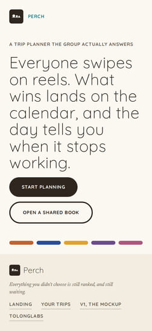
Dashboard
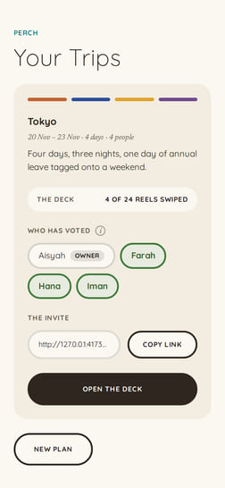
Onboarding
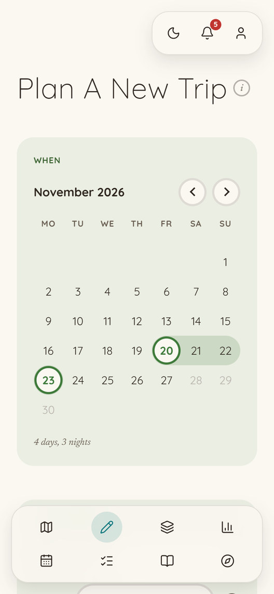
The Deck
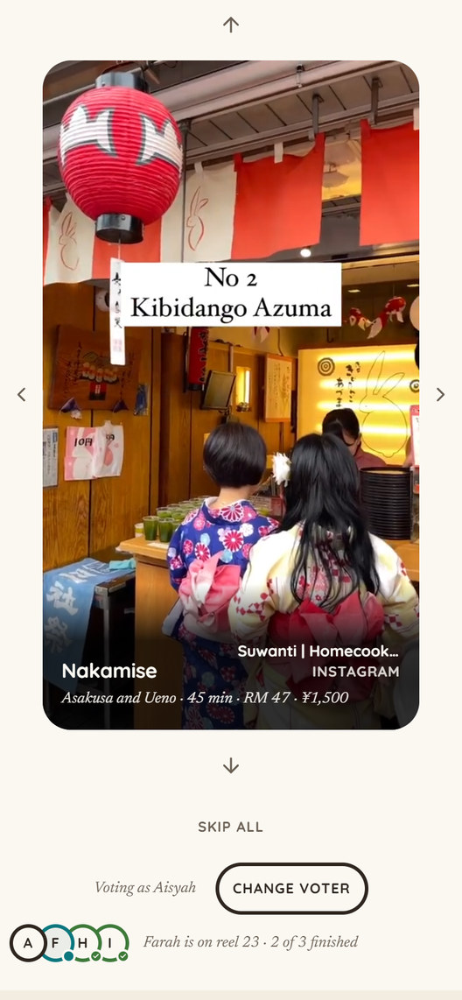
The Tally
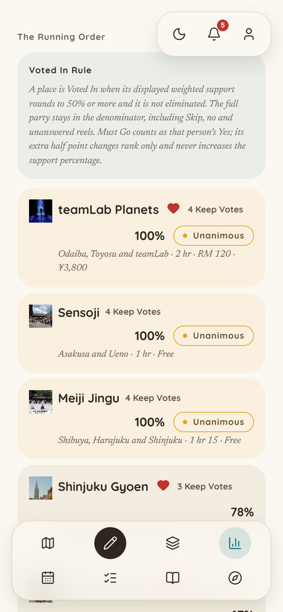
Before We Go
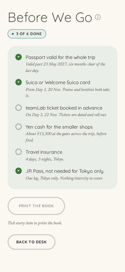
The Moment
She drags a stop out of its cluster on purpose. Day 1 turns gold, and the reason is written beside it.
Every stop fits its opening hours, and the day’s travel plus dwell fits 09:00 to 21:00.
It still fits, but the order runs more than 25 percent slower than the route the scheduler would have chosen.
A stop is outside its opening hours, or the day runs past 21:00.
Cluster by area, order by best period and opening hours, nearest neighbour within the day. No model and no black box: the colour is the whole explanation.
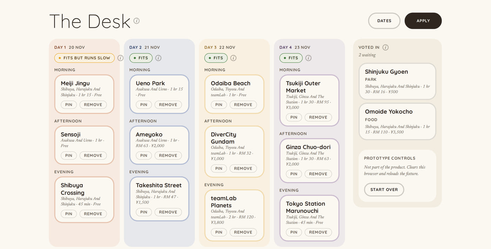
It does not undo her drag. It turns the day gold and says the order got 25 percent slower.
Impact
With Perch, After Two Minutes Of Swiping
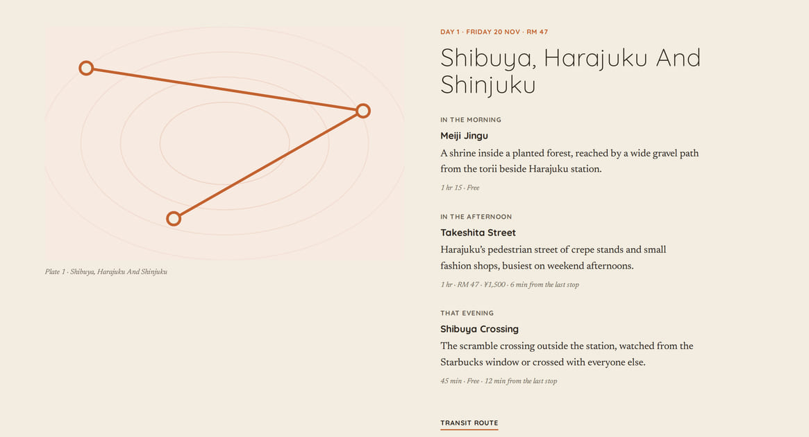
One page per day, drawing that day’s real route, with a transit link under each. This is what goes back into the group chat.
Feasibility
Every service is one more way to fail on stage, so the prototype has none. Each one the build adds is named below with the constraint we expect from it.
The Build Plan
Deployment is bug fixes only, so week three is the last week we add anything.
The Non-Claims
Six things we do not claim. The fastest way to sound like every other planner is to claim everything.
Perch does. The group swipes for two minutes, and the trip prints.
Arrow keys, space or click